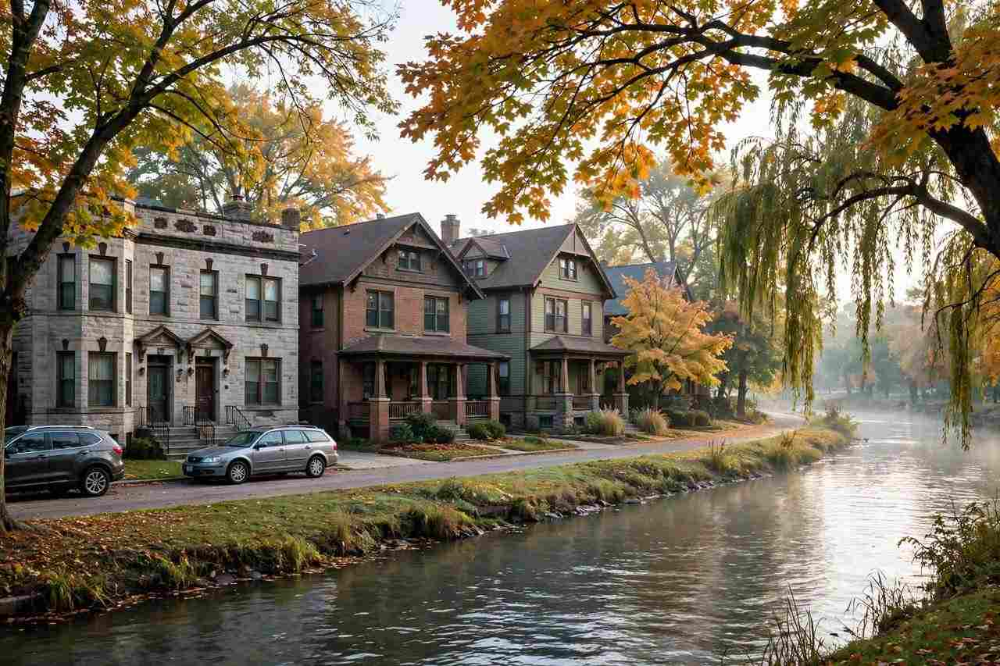

Rodent Control · Beecher, IL
Licensed Rodent Control in Beecher, IL
Murvo delivers same-day rodent control in Beecher for rats and mice in attics, walls, kitchens, and crawl spaces. Local crews start with a thorough inspection, then remove, exclude, and monitor until the problem is solved. You approve one flat-rate price in writing before any work starts, and every job carries a written guarantee across Will County. Local crews cover 1 ZIP codes in the Beecher area, from Crete to the far side of Will County.
24/7Availability
1ZIP codes covered
Same-dayResponse
Licensed · Upfront options · Written guarantees · Fully insured
Beecher at a glance
Local Rodent Control for Beecher, IL.
Will County
Countynortheast Illinois
RegionJoliet · 30 mi
Nearest metro151 mile northeast of Springfield
From Springfield1
ZIP codes covered Service by service in Beecher
Rodent Control Services Available in Beecher
Thirty rodent services, one local standard in Beecher: inspection-led, exclusion-first, and quoted in writing before work begins. Browse the full list for Will County below - each section explains what the service involves here, what it typically costs nationally, and how fast we can start.
- 01Rodent Control↗
- 02Rodent Inspection↗
- 03Rodent Removal↗
- 04Rodent Exclusion↗
- 05Rodent Proofing↗
- 06Rat Control↗
- 07Mice Control↗
- 08Mouse Removal↗
- 09Rat Removal↗
- 10Rodent Trapping↗
- 11Rodent Baiting↗
- 12Rodenticide Application↗
- 13Attic Rodent Removal↗
- 14Crawl Space Rodent Removal↗
- 15Wall Rodent Removal↗
- 16Kitchen Rodent Control↗
- 17Garage Rodent Control↗
- 18Commercial Rodent Control↗
- 19Residential Rodent Control↗
- 20Emergency Rodent Removal↗
- 21Same-Day Rodent Control↗
- 22Rodent Damage Repair↗
- 23Rodent Waste Cleanup↗
- 24Rodent Disinfection↗
- 25Rodent Odor Removal↗
- 26Dead Rodent Removal↗
- 27Rodent Dropping Cleanup↗
- 28Rodent Exclusion for Roofs↗
- 29Rodent Exclusion for Vents↗
- 30Rodent Exclusion for Chimneys↗
Rodent Control in Beecher
Rodent Control in Beecher
Most Beecher calls start with a sound nobody can place, then droppings confirm what the noise suggested. Murvo treats rodent control as a sequence, not a single visit: find the species, clear what is inside, close what let it in. Before any work begins, you approve a flat-rate written quote.
When you need rodent control in Beecher, the job starts with what is actually happening in your part of Will County. Murvo crews work Beecher every week, so they know how Norway rat (Rattus norvegicus) and House mouse (Mus musculus) behave around vintage two-flats and greystones, brick bungalows, older single-family homes, and farm and rural properties here - and where they get in: basement foundations, alley-facing garage doors, sewer laterals, and gaps around utility lines and sills. We arrive equipped for the full job, confirm the flat rate in writing before work begins, and cover the whole Beecher area, including Goodenow, Eagle Lake. No call-center runaround and no open-ended hourly billing - just a local crew, a clear plan, and a written quote you approve first. In Beecher, rodent control calls most often involve vintage two-flats and greystones, brick bungalows, older single-family homes, and farm and rural properties, where basement foundations, alley-facing garage doors, sewer laterals, and gaps around utility lines and sills decide whether the fix holds.
The pattern in Will County is predictable, so the response should be methodical. First comes identification, because Norway rat (Rattus norvegicus) and House mouse (Mus musculus) nest and feed in different places. Traps then go where travel is proven, not where it is convenient, and catches are logged by location. Sealing follows only after activity drops, using materials matched to each opening. Finally, monitoring stays in place long enough to catch a late survivor or a new arrival, and those readings decide when the program closes. That discipline is what turns a busy first week into a genuinely quiet second month for the household.
After you book, we confirm a time window and your background-checked technician arrives in a marked vehicle with identification. Once approved, trapping and sealing begin, and follow-up visits are scheduled before we leave, with the guarantee in writing. They walk the property with you, inspect inside and out, and explain what they find with photos. You receive a flat-rate written quote before any work starts. No work begins without your approval.
Need help quickly in Beecher? Call any time — the emergency line is staffed 24/7, and same-day rodent control appointments are available in most areas. We inspect first, explain the plan in plain language, and put the flat rate in writing before work starts. Murvo's Beecher crews explain the finding either way, and the flat-rate quote leaves the decision with you.
Murvo does not quote rodent control sight unseen, because species, activity, and sealing needs change the work involved. After inspection you get one flat-rate written quote, and that is the figure you pay. As national context only, Angi's 2026 figures put rat and mouse removal and control at an average of $396, with a typical range of $189 to $655 — a benchmark, not a Murvo price.
Rodent Inspection in Beecher
Rodent Inspection in Beecher
Most Beecher inspections start with uncertainty: a noise, a smell, a few droppings that might be old. Murvo turns that uncertainty into a written record. A rodent inspection checks attic, crawl space, roofline, and foundation, photographs the evidence, and ends with a flat-rate written quote for anything worth fixing.
When you need rodent inspection in Beecher, the job starts with what is actually happening in your part of Will County. Murvo crews work Beecher every week, so they know how Norway rat (Rattus norvegicus) and House mouse (Mus musculus) behave around vintage two-flats and greystones, brick bungalows, older single-family homes, and farm and rural properties here - and where they get in: basement foundations, alley-facing garage doors, sewer laterals, and gaps around utility lines and sills. We arrive equipped for the full job, confirm the flat rate in writing before work begins, and cover the whole Beecher area, including Goodenow, Eagle Lake. No call-center runaround and no open-ended hourly billing - just a local crew, a clear plan, and a written quote you approve first. Seasonal timing matters for rodent inspection in Beecher: rodents surge in Beecher from October through April.
The inspection starts outside, where we check the foundation, siding, pipe penetrations, garage doors, and roof junctions, because mice can squeeze through a gap the width of a pencil. We also note where vintage two-flats and greystones, brick bungalows, older single-family homes, and farm and rural properties create hidden routes through basement foundations, alley-facing garage doors, sewer laterals, and gaps around utility lines and sills. Inside, we examine the attic, crawl space, insulation, stored items, and food areas for droppings, nests, rub marks, and gnaw damage. Every finding is photographed and explained, and recommendations are marked urgent or preventive so you can stage the work sensibly.
Your part is simple: point out noises, droppings, and any past problems. Ours is everything else. A background-checked technician arrives on time, protects access areas, and inspects inside and out against a set checklist. Before leaving, you walk through the evidence together, discuss priorities, and decide what happens next, with no obligation attached. If you decide to proceed, those findings become the working plan, so no second survey is needed before approved repairs begin.
You do not have to wait days for answers in Beecher. Same-day rodent inspection appointments are available in most areas, urgent calls are taken 24/7, and most home inspections take under an hour. You finish the visit with photos, written findings, and flat-rate pricing for anything we recommend. A Beecher inspection confirms it on site - dropping size, gnaw marks, and entry points tell the story quickly.
Your exact rodent inspection price is confirmed before we visit, and any follow-up work is quoted as a flat rate in writing after the inspection — no hourly billing. For context, Angi's 2026 data puts a professional rodent inspection nationally at $100 to $200, often credited toward the job if you proceed.
Rodent Removal in Beecher
Rodent Removal in Beecher
Removal works best when it is species-specific. In Beecher, vintage two-flats and greystones, brick bungalows, older single-family homes, and farm and rural properties give Norway rat (Rattus norvegicus) and House mouse (Mus musculus) warm voids, stored food, and quiet nesting corners reached through basement foundations, alley-facing garage doors, sewer laterals, and gaps around utility lines and sills. Our licensed, insured technicians assess numbers and access routes first, then set traps on proven runways and return on schedule until catches fall to zero and monitoring stays clear.
In Beecher, rodent removal is not a generic spray-and-go service. Rodents exploit basement foundations, alley-facing garage doors, sewer laterals, and gaps around utility lines and sills in vintage two-flats and greystones, brick bungalows, older single-family homes, and farm and rural properties, and a fix that ignores those routes does not last. Murvo's Beecher team inspects first, shows you the evidence - droppings, gnaw marks, entry gaps - and then lays out the work with a flat-rate written quote. We serve all of Will County from Beecher, including Goodenow, Eagle Lake, and every job is covered by our written workmanship guarantee. In Beecher, rodent removal calls most often involve vintage two-flats and greystones, brick bungalows, older single-family homes, and farm and rural properties, where basement foundations, alley-facing garage doors, sewer laterals, and gaps around utility lines and sills decide whether the fix holds.
Why trap first instead of reaching for poison? Because trapped animals can be counted, removed, and disposed of hygienically, while poisoned animals can die where nobody can reach them. Technicians therefore match traps to species and setting, work attics, voids, and kitchens in sequence, and retrieve any carcass promptly. Contaminated nesting material is bagged carefully, affected surfaces are disinfected before any cleaning, and dry sweeping of droppings is never used, since that spreads contamination into the air. The sequence ends with monitoring, because removal without a confirming check is a claim rather than a result.
Once removal is underway, expect short, predictable visits. When catches reach zero, monitoring confirms it, sealing is discussed, and the job closes with a walkthrough and your guarantee paperwork in hand before we leave. Your technician checks each mapped trap, removes catches hygienically, resets what is still needed, and updates the record with you. At close, prevention advice is tailored to what actually attracted rodents to your property, not copied from a generic checklist.
For active infestations in Beecher, rodent removal can usually start the same day you call, and our team answers 24/7 when a rodent is loose in a living area. The first visit confirms activity and sets traps straight away; return visits then clear and reset them until monitoring shows the property is completely clear. If you are seeing signs now, an inspection this week is the fastest way to know which situation you are in.
How many animals are active, which species they are, and how much sealing follows removal all shape the price, so we assess first and then quote one flat rate in writing. Angi's 2026 national context — an average of $396 and a typical $189 to $655 range for rat and mouse removal — is provided for comparison only; your written quote is the exact Murvo figure.
Rodent Exclusion in Beecher
Rodent Exclusion in Beecher
What makes sealing permanent rather than cosmetic? Material rodents cannot chew, fitted so weather cannot lift it. Murvo uses copper mesh, hardware cloth, and metal flashing where each belongs, installed by licensed and insured crews. Every finished seal is photographed, walked through with you, and covered by a written workmanship guarantee.
Homeowners in Beecher call Murvo for rodent exclusion because the problem here is specific: Norway rat (Rattus norvegicus) pressure around vintage two-flats and greystones, brick bungalows, older single-family homes, and farm and rural properties, tight access at basement foundations, alley-facing garage doors, sewer laterals, and gaps around utility lines and sills, and activity that follows the local season. Our Will County crews diagnose the real source before recommending work, explain the options in plain language, and quote one flat rate in writing. Across Beecher - including Goodenow, Eagle Lake - every visit is backed by licensed, insured technicians and our written workmanship guarantee. Homes near Crete tend to show activity first in Beecher, which is why inspections start with basement foundations, alley-facing garage doors, sewer laterals, and gaps around utility lines and sills.
Before any sealing, active rodents are cleared with trapping so nothing is trapped inside the structure. A final walkthrough shows you every protected opening, and monitoring checks confirm no new activity appears at sealed points. We then work opening by opening around basement foundations, alley-facing garage doors, sewer laterals, and gaps around utility lines and sills, rooflines, and utility penetrations, photographing each finished seal. Because exclusion removes the route in rather than relying on chemicals, it reduces the need for rodenticides and supports pet-safe, no-poison control. Every seal is listed on your written guarantee.
Book the survey, and we will work around your schedule, including urgent openings near wiring or food storage. Approved work is completed opening by opening, photographed as it progresses, and reviewed with you before the visit ends. Your technician lists every gap found, explains which are active, and quotes the sealing as one written figure. The finished inventory lists every material used at every opening, which makes later inspections faster and keeps the guarantee easy to enforce.
The first step is a survey, and in Beecher we can often schedule that survey the same day you call about rodent exclusion. Sealing follows once active animals are cleared — nothing is ever sealed inside — and most homes are fully sealed within days, with entry points near wiring or food areas handled first. In Will County, activity follows the local season, so timing the work matters as much as the method.
After the survey of your Beecher home, every opening that needs sealing is listed and priced as one flat-rate written quote, so you pay only for the work your property needs. For national context, Angi's 2026 data puts basic exclusion at $200 to $600 depending on access and the number of openings; that benchmark is not a Murvo price.
Rodent Proofing in Beecher
Rodent Proofing in Beecher
The best rodent problem is the one that never starts. Rodent proofing in Beecher hardens your home before Norway rat (Rattus norvegicus) and House mouse (Mus musculus) move in: sealing gaps, screening vents, fitting door sweeps, and removing the food and shelter that attract them. Murvo surveys the whole property, prioritizes the work, and gives one flat-rate written quote for the work.
In Beecher, rodent proofing is not a generic spray-and-go service. Rodents exploit basement foundations, alley-facing garage doors, sewer laterals, and gaps around utility lines and sills in vintage two-flats and greystones, brick bungalows, older single-family homes, and farm and rural properties, and a fix that ignores those routes does not last. Murvo's Beecher team inspects first, shows you the evidence - droppings, gnaw marks, entry gaps - and then lays out the work with a flat-rate written quote. We serve all of Will County from Beecher, including Goodenow, Eagle Lake, and every job is covered by our written workmanship guarantee. Around Crete, Grant Park, Monee, the pattern is similar: House mouse (Mus musculus) finds basement foundations, alley-facing garage doors, sewer laterals, and gaps around utility lines and sills first, and lasting rodent proofing has to close those routes.
Proofing divides naturally into structure, surroundings, and habits. Surroundings means trimming branches back from the roofline, moving clutter and timber away from walls, and reducing sheltered harborage. Habits means securing pet food, bird seed, and stored produce so the property stops advertising itself. Structure means sealing utility entries, screening vents and chimneys, and fitting sweeps where doors leak light. Technicians assess all three layers in one survey and rank the combined findings by impact, not by what is easiest to sell.
Arrange a survey at a time that suits you; there is no emergency, so scheduling stays relaxed. Your technician walks every side of the property with you, photographs weak points, and talks through the plan in plain language. You then receive a written quote separating essential work from optional improvements, and nothing proceeds without your say-so. Staging the work is fine; essential sealing can proceed first while optional improvements wait until a season or budget that suits you better.
Rodent proofing is preventive, so there is rarely a rush, but surveys in Beecher can often be arranged the same day you call, and always within a few days. Most proofing work is completed in a single visit once you approve the plan, and booking before colder weather gives your home protection ahead of the seasonal rush indoors. If you are seeing signs now, an inspection this week is the fastest way to know which situation you are in.
For national context, Angi's 2026 data puts exclusion, the core of proofing, at $200 to $600 for basic work. That figure is a benchmark, not a Murvo price. After surveying your Beecher property, we separate quick homeowner wins from specialist sealing and quote the professional work as one flat rate in writing, so you can stage spending sensibly.
Rat Control in Beecher
Rat Control in Beecher
In vintage two-flats and greystones, brick bungalows, older single-family homes, and farm and rural properties, rats exploit structure and routine together, traveling fences and pipes to reach food near basement foundations, alley-facing garage doors, sewer laterals, and gaps around utility lines and sills. Our rat control across Will County checks attics, basements, drains, and outbuildings as one connected system, because treating a single room while harborage survives elsewhere simply moves the problem around the property.
When you need rat control in Beecher, the job starts with what is actually happening in your part of Will County. Murvo crews work Beecher every week, so they know how Norway rat (Rattus norvegicus) and House mouse (Mus musculus) behave around vintage two-flats and greystones, brick bungalows, older single-family homes, and farm and rural properties here - and where they get in: basement foundations, alley-facing garage doors, sewer laterals, and gaps around utility lines and sills. We arrive equipped for the full job, confirm the flat rate in writing before work begins, and cover the whole Beecher area, including Goodenow, Eagle Lake. No call-center runaround and no open-ended hourly billing - just a local crew, a clear plan, and a written quote you approve first. Seasonal timing matters for rat control in Beecher: rodents surge in Beecher from October through April.
Control starts with species and route identification, because roof rats and Norway rats behave and enter very differently. We then pair the program with roofline and entry-point exclusion, plus attic removal and cleanup where nests are found overhead. Technicians pre-bait unset traps along proven runways so wary rats feed confidently, then set them and return to check, clear, and adjust placements until activity stops. Trapped rats are removed hygienically, and each visit is documented with locations and counts. Progress is visible at every visit.
Call for rat control in Beecher and we will book an inspection, often the same day for active problems. Trapping visits then run on a set schedule, with placements adjusted as activity shifts. The job closes only when monitoring confirms rats are gone and exclusion is complete. Your technician maps routes and harborage, explains the trapping plan, and gives you a flat-rate written quote before any work begins. Your guarantee is confirmed in writing.
Call day or night — urgent rat control calls in Beecher are answered 24/7, and a same-day inspection can usually start the program. Pre-baiting begins on that first visit once you approve the written quote, traps are set when rats are feeding confidently, and scheduled checks continue until activity stops. In Will County, most cases involve the Norway rat (Rattus norvegicus) and the House mouse (Mus musculus), so the inspection focuses on their routes first.
Rat work varies with species, colony size, and how many entry points need sealing, so Murvo inspects first and quotes one flat rate in writing. For national context only, Angi's 2026 data averages rat control and removal at $396, typically $189 to $655. That benchmark is not a Murvo price; the written quote for your Beecher home is the exact figure you pay.
Mice Control in Beecher
Mice Control in Beecher
One mouse seen in a Beecher kitchen usually means more are nesting unseen, and mice breed quickly enough that a small problem becomes a large one within weeks. Murvo offers same-day appointments where available, builds the program around trapping and sealing rather than baits, and backs the finished work with a written workmanship guarantee for lasting peace of mind.
When you need mice control in Beecher, the job starts with what is actually happening in your part of Will County. Murvo crews work Beecher every week, so they know how Norway rat (Rattus norvegicus) and House mouse (Mus musculus) behave around vintage two-flats and greystones, brick bungalows, older single-family homes, and farm and rural properties here - and where they get in: basement foundations, alley-facing garage doors, sewer laterals, and gaps around utility lines and sills. We arrive equipped for the full job, confirm the flat rate in writing before work begins, and cover the whole Beecher area, including Goodenow, Eagle Lake. No call-center runaround and no open-ended hourly billing - just a local crew, a clear plan, and a written quote you approve first. The Beecher crews who handle mice control also handle the follow-through - proofing, cleanup, and monitoring - so one visit can close the whole problem.
Hygiene is part of control, not an afterthought. Technicians also review how food, pet supplies, and bird seed are stored, since an open supply restarts activity quickly. The program favors traps over bait throughout, which keeps family kitchens safer and makes every result countable and visible. Droppings in cabinets are never dry-swept; surfaces are disinfected first, following careful practice, so contamination is not pushed into the air, and nesting debris is bagged and removed. Follow-up monitoring then verifies the kitchen, attic, and voids together, rather than treating each room in isolation.
During the program, store opened food in sealed containers and keep trap areas undisturbed. Your background-checked technician returns to clear and reset clusters, adjusts placements if the pattern shifts, and completes sealing once numbers fall. At the end you review the catch record together, receive prevention advice, and confirm the written guarantee before close. Prevention notes cover the exact storage and sealing issues found at your home, making them practical rather than generic advice.
Mice programs move quickly in Beecher: a mice control survey can often be arranged the same day you call, and traps are set on that first visit once you approve the quote. Because mice investigate new objects fast, catches usually begin quickly, and scheduled check visits follow until a final confirmation shows activity has fully stopped. Around Beecher, vintage two-flats and greystones, brick bungalows, older single-family homes, and farm and rural properties give rodents the most cover, which is why entry points get checked before traps are set.
The number of rooms affected and the amount of sealing required set the price, so Murvo surveys first and quotes one flat rate in writing. For national context only, Angi's 2026 data averages rat and mouse control and removal at $396, typically $189 to $655 — not a Murvo price; your written quote is exact.
Mouse Removal in Beecher
Mouse Removal in Beecher
Mice nest where it is warm and undisturbed: attics, wall voids, crawl spaces, and behind kitchen cabinets in vintage two-flats and greystones, brick bungalows, older single-family homes, and farm and rural properties across Beecher. They feed close to those nests, following basement foundations, alley-facing garage doors, sewer laterals, and gaps around utility lines and sills and pipe runs between rooms. Our technicians check warm spots near water heaters and appliances where mice raise young, so no nesting site is missed during removal.
Homeowners in Beecher call Murvo for mouse removal because the problem here is specific: Norway rat (Rattus norvegicus) pressure around vintage two-flats and greystones, brick bungalows, older single-family homes, and farm and rural properties, tight access at basement foundations, alley-facing garage doors, sewer laterals, and gaps around utility lines and sills, and activity that follows the local season. Our Will County crews diagnose the real source before recommending work, explain the options in plain language, and quote one flat rate in writing. Across Beecher - including Goodenow, Eagle Lake - every visit is backed by licensed, insured technicians and our written workmanship guarantee. The Beecher crews who handle mouse removal also handle the follow-through - proofing, cleanup, and monitoring - so one visit can close the whole problem.
The survey comes first, and it is deliberately thorough. Lofts, under-floor voids, cabinets, and the spaces behind kitchen units are checked for nests, droppings, and stored food caches. Traps are then set in multiples at proven points, because a single trap rarely reflects colony size. Returns are scheduled tightly: catches are cleared, traps reset, and numbers tracked until they fall to zero and stay there across a confirming check before sealing begins. Photographs of nesting sites help here, because they reveal how far activity had spread before trapping began.
For mice active in living areas, call and we will aim for a same-day start where available. The first visit surveys nesting sites, sets out the multi-trap plan, and confirms your written quote. Traps are placed only after approval, return visits are booked ahead, and you receive a plain update after every check without chasing. Rooms are returned to normal use as soon as their checks are clear, and we tell you plainly which areas those are.
In Beecher, mouse removal can often begin the same day you call, especially where mice are active in kitchens or living areas. The first visit surveys nesting sites and sets traps immediately after you approve the quote; because mice investigate traps quickly, catches usually start fast, and return visits continue until numbers reach zero. In Will County, most cases involve the Norway rat (Rattus norvegicus) and the House mouse (Mus musculus), so the inspection focuses on their routes first.
Rooms involved and sealing needed determine the cost of removal, so we survey first and agree a flat rate in writing before work begins. As national context only, Angi's 2026 data averages rat and mouse removal at $396, with a typical range of $189 to $655; that benchmark is not a Murvo price, and your written quote covers your exact program.
Rat Removal in Beecher
Rat Removal in Beecher
Roof rats and Norway rats behave and enter very differently, and in Beecher the distinction decides where traps go and which gaps get sealed. vintage two-flats and greystones, brick bungalows, older single-family homes, and farm and rural properties reached through basement foundations, alley-facing garage doors, sewer laterals, and gaps around utility lines and sills can hide attic colonies or basement harborage for months. Our licensed, background-checked technicians trace the full route, remove the colony, and sanitize contaminated areas where nests were found.
When you need rat removal in Beecher, the job starts with what is actually happening in your part of Will County. Murvo crews work Beecher every week, so they know how Norway rat (Rattus norvegicus) and House mouse (Mus musculus) behave around vintage two-flats and greystones, brick bungalows, older single-family homes, and farm and rural properties here - and where they get in: basement foundations, alley-facing garage doors, sewer laterals, and gaps around utility lines and sills. We arrive equipped for the full job, confirm the flat rate in writing before work begins, and cover the whole Beecher area, including Goodenow, Eagle Lake. No call-center runaround and no open-ended hourly billing - just a local crew, a clear plan, and a written quote you approve first. Around Crete, Grant Park, Monee, the pattern is similar: House mouse (Mus musculus) finds basement foundations, alley-facing garage doors, sewer laterals, and gaps around utility lines and sills first, and lasting rat removal has to close those routes.
We lead with trapping and exclusion in an integrated, pet-conscious approach, using locked bait stations only where genuinely justified and monitored on schedule. Monitoring devices and a final walkthrough then provide documented evidence that activity has ended, and ongoing proofing keeps drains, vents, and rooflines checked afterwards. After clearance, contaminated insulation areas can be sanitized, and droppings are never dry-swept: following CDC guidance, surfaces are disinfected first before waste is removed. That evidence is always shared with you in writing.
Help the program by securing food, clearing access to the attic or basement, and leaving traps exactly where placed. Your background-checked technician handles removal, adjustments, sanitation, and the final monitoring period. Sign-off includes the documented evidence, your guarantee in writing, and practical proofing guidance tailored to how rats reached your property in the first place. You also receive guidance on drains, vegetation, and storage specific to your property, aimed at discouraging the next colony from settling.
Rats in a living area cannot wait for a routine slot. In Beecher, rat removal can usually start the same day you call and our line answers 24/7 for urgent cases. Pre-baiting starts on the first visit after you approve the written quote, traps are set once rats feed confidently — typically within days — and frequent returns run until monitoring confirms the colony is gone. The written quote for your Beecher property will spell out exactly which of these applies before any work starts.
Colony size, access, and the sealing needed afterwards drive the price, so Murvo assesses the property first and quotes a flat rate in writing covering the full program. Angi's 2026 data, for national context only, averages rat removal at $396 and typically ranges from $189 to $655; that is a benchmark, not a Murvo price.
Rodent Trapping in Beecher
Rodent Trapping in Beecher
Most Beecher trapping programs succeed or fail on placement, not equipment. Murvo maps runways from droppings and rub marks first, then positions traps perpendicular to walls and along beams and pipes where rodents genuinely travel. You approve one flat-rate written quote covering the program and its check visits.
When you need rodent trapping in Beecher, the job starts with what is actually happening in your part of Will County. Murvo crews work Beecher every week, so they know how Norway rat (Rattus norvegicus) and House mouse (Mus musculus) behave around vintage two-flats and greystones, brick bungalows, older single-family homes, and farm and rural properties here - and where they get in: basement foundations, alley-facing garage doors, sewer laterals, and gaps around utility lines and sills. We arrive equipped for the full job, confirm the flat rate in writing before work begins, and cover the whole Beecher area, including Goodenow, Eagle Lake. No call-center runaround and no open-ended hourly billing - just a local crew, a clear plan, and a written quote you approve first. Seasonal timing matters for rodent trapping in Beecher: rodents surge in Beecher from October through April.
Adjustment is where experience shows. Baits are refreshed and matched to what the species is already eating nearby. Households receive a simple map of device locations and safety guidance for children and pets. As numbers fall toward zero, attention shifts to exclusion recommendations and cleanup, converting a trapping program into lasting protection. If catches cluster at one end of a runway, placements concentrate there; if a route goes quiet while another warms up, devices move accordingly. Households can follow that adjustment process through the shared catch log, which records every change of position.
Call to book, and a first visit can often happen the same day. Scheduled returns then clear, reset, and record catches, sharing the running total with you at every single visit. That visit maps activity, places or pre-baits devices, and produces your written quote for the full program including checks. Nothing proceeds without approval. Catch records are never an afterthought; they are the evidence that decides when trapping ends and monitoring alone takes over.
In Beecher, a rodent trapping program can usually start the same day you call, with traps placed or pre-baiting begun on the first visit after you approve the quote. Mice often investigate within the first night, while wary rats need a few days of pre-baiting before traps are set. Scheduled checks then keep the program moving until numbers reach zero. That is also why Murvo pairs removal with exclusion in Beecher - treating the animal without closing basement foundations, alley-facing garage doors, sewer laterals, and gaps around utility lines and sills rarely lasts.
Rather than charging by the trap or by the visit, Murvo inspects first and quotes rodent trapping as one flat rate in writing for the complete program, including its check visits. Price depends on species, activity level, and how many checks are needed, and there is no hourly billing at any stage, so there are no per-visit surprises.
Rodent Baiting in Beecher
Rodent Baiting in Beecher
Baiting done badly is a risk to pets, children, and wildlife, so Murvo never uses loose bait in Beecher homes. Every station is tamper-resistant and locked, positioned along runways away from play areas and food, and paired with trapping and exclusion so bait is never the only step. One flat-rate written quote covers placement and monitoring.
Homeowners in Beecher call Murvo for rodent baiting because the problem here is specific: Norway rat (Rattus norvegicus) pressure around vintage two-flats and greystones, brick bungalows, older single-family homes, and farm and rural properties, tight access at basement foundations, alley-facing garage doors, sewer laterals, and gaps around utility lines and sills, and activity that follows the local season. Our Will County crews diagnose the real source before recommending work, explain the options in plain language, and quote one flat rate in writing. Across Beecher - including Goodenow, Eagle Lake - every visit is backed by licensed, insured technicians and our written workmanship guarantee. In Beecher, rodent baiting calls most often involve vintage two-flats and greystones, brick bungalows, older single-family homes, and farm and rural properties, where basement foundations, alley-facing garage doors, sewer laterals, and gaps around utility lines and sills decide whether the fix holds.
Where baiting is not appropriate indoors, we say so, and recommend trapping first followed by proofing of gaps around pipes, vents, and doors. Consumption records from each visit show whether activity is falling, holding, or moving, guiding whether stations stay, move, or come out entirely in favor of sealing and trapping alone. That exclusion-first approach reduces reliance on bait over time, which matters for households with children, pets, or visiting wildlife in Beecher. You receive those records after every monitoring visit.
Booking rodent baiting in Beecher starts with an inspection, not a station. Monitoring visits are scheduled before we leave, and stations come out once activity is confirmed clear. Your technician maps activity, reviews pet, child, and wildlife concerns with you, and confirms a flat-rate written quote before anything is placed. Approved stations are installed locked and labeled the same visit, with locations photographed for you. Your written guarantee covers the full program.
Deliberate setup matters more than speed with rodent baiting, but the first step is still fast: an inspection in Beecher can often be arranged the same day you call. Stations are placed only after activity is mapped and you approve the written quote and each location, then monitoring runs on a fixed schedule until consumption stops and activity is confirmed clear. Murvo's Beecher crews explain the finding either way, and the flat-rate quote leaves the decision with you.
How many locked stations your property needs and how long monitoring runs determine the cost, so Murvo inspects and maps activity first, then quotes one flat rate in writing covering placement and scheduled checks. There are no per-visit surprises, and because the approach is exclusion-first, the aim is to reduce and eventually remove stations rather than maintain them forever.
Rodenticide Application in Beecher
Rodenticide Application in Beecher
In vintage two-flats and greystones, brick bungalows, older single-family homes, and farm and rural properties, product choice is only half the decision; placement and oversight matter just as much near basement foundations, alley-facing garage doors, sewer laterals, and gaps around utility lines and sills routes in Will County. Licensed Murvo technicians use tamper-resistant locked stations exclusively, map and label every unit, record amounts at each visit, and retrieve accessible carcasses promptly to limit odor and secondary risks.
Homeowners in Beecher call Murvo for rodenticide application because the problem here is specific: Norway rat (Rattus norvegicus) pressure around vintage two-flats and greystones, brick bungalows, older single-family homes, and farm and rural properties, tight access at basement foundations, alley-facing garage doors, sewer laterals, and gaps around utility lines and sills, and activity that follows the local season. Our Will County crews diagnose the real source before recommending work, explain the options in plain language, and quote one flat rate in writing. Across Beecher - including Goodenow, Eagle Lake - every visit is backed by licensed, insured technicians and our written workmanship guarantee. The Beecher crews who handle rodenticide application also handle the follow-through - proofing, cleanup, and monitoring - so one visit can close the whole problem.
Monitoring data guides the whole treatment: whether it continues, changes product, or stops entirely in favor of proofing alone. We prioritize sealing entry points with exclusion and physical removal so dependence on chemical control shrinks visit by visit. Dead rodents are retrieved promptly where accessible, stations are kept away from pet and child areas, and every product used is documented with its label and safety information, so nothing applied at your property is ever hidden from you. State restrictions are checked before product selection.
Booking rodenticide application in Beecher starts with an inspection visit, often available the same day. If you proceed, stations are installed locked and labeled, monitoring visits are scheduled, and treatment continues only while monitoring data supports it, under our written workmanship guarantee. Your licensed technician confirms whether treatment is justified, explains safer alternatives first, and gives you a flat-rate written quote before anything is applied. You can stop the program at any point.
No responsible rodenticide application starts without an inspection, and in Beecher that inspection can often be scheduled the same day you call. If treatment is justified and you approve the written quote, locked stations are installed on that visit. Monitoring then runs on schedule, and treatment stops as soon as the data shows activity has ended. Around Beecher, vintage two-flats and greystones, brick bungalows, older single-family homes, and farm and rural properties give rodents the most cover, which is why entry points get checked before traps are set.
Station numbers, the product permitted under Illinois rules, and the length of monitoring all shape the price. Murvo inspects first, explains whether trapping or exclusion could avoid chemical control entirely, and then quotes one flat rate in writing before work begins. That quote covers scheduled monitoring visits, so there are no per-visit surprises later.
Attic Rodent Removal in Beecher
Attic Rodent Removal in Beecher
When chewed wiring appears overhead, treat it as urgent; damaged cables are a real fire risk. Murvo prioritizes those Beecher attics, clears animals with targeted trapping rather than poison, leaves monitoring briefly after sealing to confirm nothing remains inside, and backs the finished work with a written workmanship guarantee.
Homeowners in Beecher call Murvo for attic rodent removal because the problem here is specific: Norway rat (Rattus norvegicus) pressure around vintage two-flats and greystones, brick bungalows, older single-family homes, and farm and rural properties, tight access at basement foundations, alley-facing garage doors, sewer laterals, and gaps around utility lines and sills, and activity that follows the local season. Our Will County crews diagnose the real source before recommending work, explain the options in plain language, and quote one flat rate in writing. Across Beecher - including Goodenow, Eagle Lake - every visit is backed by licensed, insured technicians and our written workmanship guarantee. Homes near Crete tend to show activity first in Beecher, which is why inspections start with basement foundations, alley-facing garage doors, sewer laterals, and gaps around utility lines and sills.
Attic work divides into clearing, closing, and confirming. Closing means roofline exclusion: metal mesh and sealed flashing at eaves, vents, and junctions, plus advice on branches bridging animals onto the roof. Confirming means monitoring traps left briefly after sealing, proving the space is empty. Photographs document conditions at each stage, including insulation damage and any wiring concerns found overhead. Clearing means targeted traps set where droppings and runways concentrate, checked on schedule until catches end. Before-and-after photographs make that sequence visible, including exactly which roofline openings were open at the start.
Book an attic visit, same-day where wiring damage or heavy activity makes it urgent. Trapping starts after approval, follow-up checks are booked ahead, and sealing plus cleanup complete the sequence before monitoring confirms the result. Your technician inspects overhead and along the roofline, shows you photographs of the evidence, and confirms the written quote. Wiring or insulation concerns are flagged separately in writing, so you can arrange any specialist repairs with clear information in hand.
Overhead scratching in Beecher often gets a same-day attic rodent removal visit, and attics with chewed wiring are prioritized because of the fire risk. Trapping starts on the first visit once you approve the written quote, checks run on schedule, and most attics are cleared and sealed within days. Monitoring stays in place briefly afterwards to confirm nothing remains inside. The written quote for your Beecher property will spell out exactly which of these applies before any work starts.
Attic costs depend on how many animals are active, how much sealing the roofline needs, and whether contaminated insulation requires cleanup, so Murvo inspects first and quotes one flat rate in writing. That quote covers the removal program described, with cleanup options priced separately in writing before you decide, so there are no surprises once work is underway.
Crawl Space Rodent Removal in Beecher
Crawl Space Rodent Removal in Beecher
Under vintage two-flats and greystones, brick bungalows, older single-family homes, and farm and rural properties in Beecher, crawl spaces give Norway rat (Rattus norvegicus) and House mouse (Mus musculus) shelter reached through basement foundations, alley-facing garage doors, sewer laterals, and gaps around utility lines and sills, plus burrows at foundation vents and chewed pipe insulation. Standing water, leaking pipes, and stored timber underneath all raise rodent pressure, so our technicians flag those issues during inspection too. Removal carries one flat-rate written quote agreed before work begins.
In Beecher, crawl space rodent removal is not a generic spray-and-go service. Rodents exploit basement foundations, alley-facing garage doors, sewer laterals, and gaps around utility lines and sills in vintage two-flats and greystones, brick bungalows, older single-family homes, and farm and rural properties, and a fix that ignores those routes does not last. Murvo's Beecher team inspects first, shows you the evidence - droppings, gnaw marks, entry gaps - and then lays out the work with a flat-rate written quote. We serve all of Will County from Beecher, including Goodenow, Eagle Lake, and every job is covered by our written workmanship guarantee. Around Crete, Grant Park, Monee, the pattern is similar: House mouse (Mus musculus) finds basement foundations, alley-facing garage doors, sewer laterals, and gaps around utility lines and sills first, and lasting crawl space rodent removal has to close those routes.
Work below a home follows a clear order. Only after clearance does exclusion begin: sturdy mesh across foundation vents, sealing around piers and plumbing penetrations, and secure refitting of access panels. Waste cleanup removes droppings and nesting, and monitoring checks afterwards confirm the space has stayed quiet before the job closes. Inspection comes first, with photographs establishing species, nesting sites, and damage to vapor barrier and pipe insulation. Trapping then clears active animals on scheduled checks. That photographic record matters later, because conditions under a home are easy to forget once panels close again.
Schedule an under-home inspection, usually within days and sooner when odors reach living areas. Clearance, vent screening, and cleanup then follow in sequence, with monitoring left in place until the space below is confirmed quiet. Your technician photographs conditions below, explains findings in plain language, and confirms the written quote before any trapping. Photographs from below the home accompany the final paperwork, which is especially useful because few homeowners ever see that space themselves.
In Beecher, crawl space rodent removal inspections can usually be arranged within a few days, and sooner where odors are drifting into living areas or activity sounds heavy. Trapping starts on the first visit after you approve the written quote, and clearance plus sealing follow in sequence, with monitoring left in place until the space below is confirmed quiet. That is also why Murvo pairs removal with exclusion in Beecher - treating the animal without closing basement foundations, alley-facing garage doors, sewer laterals, and gaps around utility lines and sills rarely lasts.
Crawl-space costs depend on access, how many vents and gaps need sealing, and whether waste cleanup is required, so Murvo inspects first and quotes one flat rate in writing. If extra vents need sealing within the agreed scope, there are no surprises, and cleanup options are priced in writing before you decide whether to include them.
Wall Rodent Removal in Beecher
Wall Rodent Removal in Beecher
Scratching inside a wall in Beecher is maddening precisely because you cannot see what is causing it. Murvo's wall rodent removal locates activity using listening, thermal clues, and entry tracing, then places trapping at void access points to draw animals out without unnecessary demolition. A flat-rate written quote comes first, and access cuts are only made when truly needed.
In Beecher, wall rodent removal is not a generic spray-and-go service. Rodents exploit basement foundations, alley-facing garage doors, sewer laterals, and gaps around utility lines and sills in vintage two-flats and greystones, brick bungalows, older single-family homes, and farm and rural properties, and a fix that ignores those routes does not last. Murvo's Beecher team inspects first, shows you the evidence - droppings, gnaw marks, entry gaps - and then lays out the work with a flat-rate written quote. We serve all of Will County from Beecher, including Goodenow, Eagle Lake, and every job is covered by our written workmanship guarantee. Around Crete, Grant Park, Monee, the pattern is similar: House mouse (Mus musculus) finds basement foundations, alley-facing garage doors, sewer laterals, and gaps around utility lines and sills first, and lasting wall rodent removal has to close those routes.
Once the void is clear, the route gets closed and the space made safe. Baseboard and pipe gaps linked to kitchen activity are sealed as part of wider proofing. If a rodent has died inside, retrieval is followed by sanitation: contaminated material is never dry-swept, surfaces are disinfected first, and odor treatment discourages new animals from investigating. Monitoring at key access points and repeat quiet-wall checks then confirm silence before any minimal, agreed access cut is made good. Only then is the job closed, with the monitoring record and any sanitation work documented for you.
Between visits, note the times and rooms where sounds continue, since that pattern guides adjustments. Sign-off happens only when monitoring confirms silence, sealing and sanitation are complete, and your guarantee paperwork is confirmed in writing. Your background-checked technician clears traps, checks connected voids, and runs quiet checks at varied times of day. Silence is checked more than once before sign-off, because a single quiet evening can mislead when an animal simply moves elsewhere.
In Beecher, wall rodent removal locating visits are often available the same day you call, especially for persistent scratching keeping you awake. Trapping is set at access points on that first visit once you approve the written quote, and because rodents travel the void nightly, results usually follow within days, confirmed by quiet-wall checks before we sign off. That is also why Murvo pairs removal with exclusion in Beecher - treating the animal without closing basement foundations, alley-facing garage doors, sewer laterals, and gaps around utility lines and sills rarely lasts.
Wall work pricing depends on how precisely activity can be located and whether a minimal access cut is needed, which is why Murvo locates the activity first and quotes a flat rate in writing. That way wall access work never becomes an open-ended bill, and the quote covers the trapping, sealing, and monitoring described in your plan.
Kitchen Rodent Control in Beecher
Kitchen Rodent Control in Beecher
Droppings in cabinets, gnawed packaging or grease marks along the kickboards mean Norway rat (Rattus norvegicus) or House mouse (Mus musculus) are feeding where your family eats. Our kitchen rodent control in Beecher removes rodents safely, seals gaps behind appliances and pipes, and helps keep food preparation areas clean, hygienic and properly protected.
When you need kitchen rodent control in Beecher, the job starts with what is actually happening in your part of Will County. Murvo crews work Beecher every week, so they know how Norway rat (Rattus norvegicus) and House mouse (Mus musculus) behave around vintage two-flats and greystones, brick bungalows, older single-family homes, and farm and rural properties here - and where they get in: basement foundations, alley-facing garage doors, sewer laterals, and gaps around utility lines and sills. We arrive equipped for the full job, confirm the flat rate in writing before work begins, and cover the whole Beecher area, including Goodenow, Eagle Lake. No call-center runaround and no open-ended hourly billing - just a local crew, a clear plan, and a written quote you approve first. The Beecher crews who handle kitchen rodent control also handle the follow-through - proofing, cleanup, and monitoring - so one visit can close the whole problem.
First we map the kitchen: droppings in drawers, gnaw marks on packaging, rub marks and the gaps rodents use around pipes and appliances. Because kitchen activity usually starts elsewhere, we follow routes into basements, garages and wall voids before treating the symptom alone. Entry gaps are sealed, contaminated surfaces disinfected, and simple food-storage changes agreed with you, such as sealed containers, fixed drips and crumbs cleared behind appliances. Trapping is discreet and positioned away from counters and food storage. Each stage is recorded on your written service report.
It starts with a short call about sightings, sounds and access behind appliances. Approved work removes the animals, closes entry gaps and addresses contaminated surfaces. On arrival, your technician confirms the route rodents are using before quoting the full job in writing. We return as agreed to verify results, adjust if needed, and leave you with clear notes on what was sealed, what was cleaned, and what to watch for next.
Our phone lines are open 24/7, and kitchen cases involving droppings near food preparation areas are treated as a priority. In many Beecher cases we can arrange a same-day visit, subject to technician availability. Call, describe what you have found, and we will offer the earliest appointment we can. Around Beecher, vintage two-flats and greystones, brick bungalows, older single-family homes, and farm and rural properties give rodents the most cover, which is why entry points get checked before traps are set.
For national context, Angi's 2026 figures put rat extermination at $189-$655, averaging $396, but those figures are not Murvo prices. What your kitchen needs — trapping, sealing and follow-up monitoring — is assessed on site first. Murvo then provides one flat-rate written quote with no hourly billing, and work only begins after you approve it.
Garage Rodent Control in Beecher
Garage Rodent Control in Beecher
Garages give Norway rat (Rattus norvegicus) and House mouse (Mus musculus) shelter, stored food and a quiet route into the house, especially through gaps under the door. Our garage rodent control in Beecher removes rodents, seals door and wall entry points, and protects stored belongings, vehicles and wiring from gnaw damage. That is the standard Murvo works to in Illinois.
When you need garage rodent control in Beecher, the job starts with what is actually happening in your part of Will County. Murvo crews work Beecher every week, so they know how Norway rat (Rattus norvegicus) and House mouse (Mus musculus) behave around vintage two-flats and greystones, brick bungalows, older single-family homes, and farm and rural properties here - and where they get in: basement foundations, alley-facing garage doors, sewer laterals, and gaps around utility lines and sills. We arrive equipped for the full job, confirm the flat rate in writing before work begins, and cover the whole Beecher area, including Goodenow, Eagle Lake. No call-center runaround and no open-ended hourly billing - just a local crew, a clear plan, and a written quote you approve first. The Beecher crews who handle garage rodent control also handle the follow-through - proofing, cleanup, and monitoring - so one visit can close the whole problem.
The garage process pairs removal with long-term proofing. The aim is a garage that no longer shelters rodents or feeds them into your home. Technicians remove rodents and nests, disinfect contaminated areas where needed, and seal the gaps mice and rats squeeze through, remembering mice need only a very small opening. We check vehicle wiring and stored soft furnishings for gnaw damage, recommend sealed containers instead of cardboard, and set monitoring points to verify the space stays clear. Safety of occupants and pets guides every method chosen.
Booking is one call. On arrival we inspect first, explain what we found in plain language, and give one written flat-rate price for the whole plan. Traps are set, entry points sealed and contaminated material dealt with safely. Follow-up visits check activity levels and adjust the plan if rodents are still moving. When monitoring shows the garage is clear, we close the job, with the guarantee in writing. Questions are answered honestly throughout, with findings in writing.
We answer calls 24/7 and treat garages with active nesting, chewed wiring or rodents moving into the house as urgent. Same-day appointments in Beecher are often available, depending on technician schedules. Call with a description of the signs you have seen and we will offer you the earliest visit we can. The written quote for your Beecher property will spell out exactly which of these applies before any work starts.
Pricing depends on garage size, how established the infestation is, and how much proofing the doors and walls need. Murvo inspects first and quotes one flat rate in writing, covering trapping, nest removal, sealing and monitoring, with no hourly charges. Nothing starts until you approve that price, and the completed work is backed by our written workmanship guarantee.
Commercial Rodent Control in Beecher
Commercial Rodent Control in Beecher
One rodent sighting can close a restaurant, fail a food-safety audit or destroy stock in a warehouse. Our commercial rodent control in Beecher protects restaurants, warehouses and commercial sites with discreet service, monitored trapping, durable exclusion and audit-ready documentation that keeps inspectors and auditors satisfied. Licensed and insured, Murvo backs every job with a written workmanship guarantee.
Homeowners in Beecher call Murvo for commercial rodent control because the problem here is specific: Norway rat (Rattus norvegicus) pressure around vintage two-flats and greystones, brick bungalows, older single-family homes, and farm and rural properties, tight access at basement foundations, alley-facing garage doors, sewer laterals, and gaps around utility lines and sills, and activity that follows the local season. Our Will County crews diagnose the real source before recommending work, explain the options in plain language, and quote one flat rate in writing. Across Beecher - including Goodenow, Eagle Lake - every visit is backed by licensed, insured technicians and our written workmanship guarantee. Around Crete, Grant Park, Monee, the pattern is similar: House mouse (Mus musculus) finds basement foundations, alley-facing garage doors, sewer laterals, and gaps around utility lines and sills first, and lasting commercial rodent control has to close those routes.
A site-wide inspection covers kitchens, loading docks, bin areas, storage, staff areas and roof voids, identifying species, pressure points and compliance risks. We deploy monitored trapping and, outdoors only, locked stations where appropriate, with full product records and no loose rodenticide near food. Exclusion seals dock doors, vents and service penetrations. Written service reports and trend reporting follow every visit, showing activity falling over time, exactly what health inspectors and food-safety auditors want documented. Nothing is left to guesswork at any stage.
First comes a conversation about your site, sector and any audit deadlines ahead. Next, a full survey documents entry points, harborage and activity, followed by a written price for the agreed scope. Work then proceeds around your hours, keeping customers and deliveries moving. Each visit closes with findings in writing and clear next actions. Managers review progress with us regularly, so the program stays matched to the building, the season and the level of rodent pressure outside.
Our commercial lines are open 24/7, and live sightings during trading hours are treated as emergencies and handled discreetly. Response in Beecher depends on technician availability, but we will always offer the earliest visit we can and advise on immediate steps to protect stock, customers and your audit position. In Will County, activity follows the local season, so timing the work matters as much as the method.
For wider context, Angi's 2026 figures put rat extermination at $189-$655, averaging $396 nationally, though commercial sites are scoped individually and those figures are not Murvo prices. Site size, sector, activity and the exclusion and monitoring required all shape the cost. Murvo surveys first, then quotes a flat rate in writing for initial work or a clear scheduled-service price for an ongoing program, with reports included for your audit file.
Residential Rodent Control in Beecher
Residential Rodent Control in Beecher
For families in vintage two-flats and greystones, brick bungalows, older single-family homes, and farm and rural properties, the worry is understandable: droppings near food, noises at night, children and pets underfoot. Our residential rodent control in Beecher uses careful, pet-conscious methods, explains each step plainly, and keeps loose poison out of indoor areas. Licensed, insured technicians handle the visit from first inspection through final monitoring check.
When you need residential rodent control in Beecher, the job starts with what is actually happening in your part of Will County. Murvo crews work Beecher every week, so they know how Norway rat (Rattus norvegicus) and House mouse (Mus musculus) behave around vintage two-flats and greystones, brick bungalows, older single-family homes, and farm and rural properties here - and where they get in: basement foundations, alley-facing garage doors, sewer laterals, and gaps around utility lines and sills. We arrive equipped for the full job, confirm the flat rate in writing before work begins, and cover the whole Beecher area, including Goodenow, Eagle Lake. No call-center runaround and no open-ended hourly billing - just a local crew, a clear plan, and a written quote you approve first. Seasonal timing matters for residential rodent control in Beecher: rodents surge in Beecher from October through April.
We treat the home as a system, because rodents rarely stay in one room. Advice on food storage, pet food and garden attractants is included, so the conditions that drew rodents in are removed alongside the rodents themselves. Technicians trace routes between roof, walls, garage and kitchen, set traps along real runways, and seal entry points with durable, gnaw-resistant materials once animals are out. Contaminated nesting material is removed safely and affected areas disinfected. Your technician explains each stage as the work progresses.
After booking, a licensed, background-checked technician arrives at the agreed time and inspects the whole property. You receive one flat-rate written quote covering the plan before work starts. Once approved, removal, sealing and cleanup go ahead in the right order. We return for monitoring visits, report what we find each time, and close the job only when activity has stopped. The work is backed by our written workmanship guarantee. We leave the area tidy when the work finishes.
We are available 24/7 by phone, and homes with rodents in living areas, kitchens or children's bedrooms are prioritized. Same-day visits in Beecher are often possible, subject to technician availability. Tell us what you have seen or heard, and we will offer the earliest appointment available and advise what to do meanwhile. The written quote for your Beecher property will spell out exactly which of these applies before any work starts.
Cost depends on the species, how established the infestation is, and how much exclusion and cleanup your home needs. Murvo inspects first, then quotes one flat rate in writing covering removal, sealing, cleaning and monitoring, with no hourly charges or add-on surprises. You approve the price before work begins, and everything is backed by our written workmanship guarantee.
Emergency Rodent Removal in Beecher
Emergency Rodent Removal in Beecher
A rat in the kitchen, scratching inside a bedroom wall or droppings found where children play cannot wait for a routine appointment. Our emergency rodent removal in Beecher is available 24/7, with licensed technicians who remove the animals, secure entry points and make the space safe again.
Homeowners in Beecher call Murvo for emergency rodent removal because the problem here is specific: Norway rat (Rattus norvegicus) pressure around vintage two-flats and greystones, brick bungalows, older single-family homes, and farm and rural properties, tight access at basement foundations, alley-facing garage doors, sewer laterals, and gaps around utility lines and sills, and activity that follows the local season. Our Will County crews diagnose the real source before recommending work, explain the options in plain language, and quote one flat rate in writing. Across Beecher - including Goodenow, Eagle Lake - every visit is backed by licensed, insured technicians and our written workmanship guarantee. The Beecher crews who handle emergency rodent removal also handle the follow-through - proofing, cleanup, and monitoring - so one visit can close the whole problem.
Emergency work starts with a focused assessment: where the animal is, how it got in, and whether more are present. Immediate risks such as chewed wiring or contaminated food areas are flagged straight away. Entry points are secured, droppings disinfected safely, and monitoring set so any remaining activity is caught quickly rather than discovered days later. Technicians remove rodents using targeted trapping or direct removal methods suited to the location, checking wall voids, attics and kitchens for further activity. Nothing is left to guesswork at any stage.
Call any time, day or night, and describe what is happening. We agree the earliest visit available and any steps to keep people and pets safe meanwhile. On arrival the technician inspects, quotes one flat rate in writing, and starts once you approve. Removal and securing come first, then disinfection and monitoring. Follow-up visits confirm the home is clear, under our written workmanship guarantee. You stay informed at every stage of the work.
Our lines are open 24/7, every day, and emergency calls in Beecher are triaged by risk, with live rodents in living areas, food contamination and chewed wiring prioritized. We will offer the earliest visit our technicians can reach and talk you through simple steps to keep everyone safe until we arrive. That is also why Murvo pairs removal with exclusion in Beecher - treating the animal without closing basement foundations, alley-facing garage doors, sewer laterals, and gaps around utility lines and sills rarely lasts.
Emergency pricing depends on where the rodents are, how many are involved, and what securing, cleanup or follow-up the property needs. Murvo inspects on arrival and quotes one flat rate in writing before work starts, with no hourly billing, even for urgent callouts. You approve the price first, and the work is backed by our written workmanship guarantee.
Same-Day Rodent Control in Beecher
Same-Day Rodent Control in Beecher
Speed helps only when the work holds up. A same-day visit in Beecher still covers species identification, trap placement on real runways and a written plan for sealing and follow-up. Our lines are open 24/7, so you can call early, explain the signs, and give our technicians the best chance to reach you today.
When you need same-day rodent control in Beecher, the job starts with what is actually happening in your part of Will County. Murvo crews work Beecher every week, so they know how Norway rat (Rattus norvegicus) and House mouse (Mus musculus) behave around vintage two-flats and greystones, brick bungalows, older single-family homes, and farm and rural properties here - and where they get in: basement foundations, alley-facing garage doors, sewer laterals, and gaps around utility lines and sills. We arrive equipped for the full job, confirm the flat rate in writing before work begins, and cover the whole Beecher area, including Goodenow, Eagle Lake. No call-center runaround and no open-ended hourly billing - just a local crew, a clear plan, and a written quote you approve first. In Beecher, same-day rodent control calls most often involve vintage two-flats and greystones, brick bungalows, older single-family homes, and farm and rural properties, where basement foundations, alley-facing garage doors, sewer laterals, and gaps around utility lines and sills decide whether the fix holds.
Technicians combine immediate action with lasting proofing. This staged approach means same-day speed where it matters, without skipping the sealing and checking that make results permanent for Beecher homes and businesses. Safety of occupants and pets guides every method chosen. The first visit removes pressure by setting traps and securing the most obvious gaps, while a full inspection maps every route rodents use around the building. Follow-up work completes exclusion, disinfects contaminated areas and verifies results through monitoring. Nothing is left to guesswork at any stage.
Phone as early as you can and describe where signs appeared. Traps are placed, key gaps are noted or secured, and follow-up appointments are arranged before departure. If a same-day slot is available in your area, we will book it and confirm access details, pets and parking. Your technician inspects on arrival, quotes one price in writing, and starts approved work during that same visit. Monitoring then continues until repeat checks show the property is clear of activity.
Call as early in the day as you can and we will offer the earliest same-day appointment our Beecher technicians can reach, subject to availability. Our lines are open 24/7. If today is fully booked, we will offer the next available visit and advise on simple precautions to take meanwhile. In Will County, most cases involve the Norway rat (Rattus norvegicus) and the House mouse (Mus musculus), so the inspection focuses on their routes first.
Speed does not change how Murvo prices work, and there is no premium surprise for a same-day start. For context, Angi's 2026 figures put rat extermination at $189-$655, averaging $396 nationally, but those are not Murvo prices. After inspection, you receive one flat-rate written quote based on species, activity and the exclusion and cleanup needed, and treatment begins only after you approve it.
Rodent Damage Repair in Beecher
Rodent Damage Repair in Beecher
Repairing before rodents are excluded wastes money, which is why sequencing matters. Our team in Beecher coordinates removal, proofing and repair as one plan for vintage two-flats and greystones, brick bungalows, older single-family homes, and farm and rural properties. We explain honestly what needs replacing, what can be cleaned and kept, and what should be checked by an electrician or plumber before we begin work.
Homeowners in Beecher call Murvo for rodent damage repair because the problem here is specific: Norway rat (Rattus norvegicus) pressure around vintage two-flats and greystones, brick bungalows, older single-family homes, and farm and rural properties, tight access at basement foundations, alley-facing garage doors, sewer laterals, and gaps around utility lines and sills, and activity that follows the local season. Our Will County crews diagnose the real source before recommending work, explain the options in plain language, and quote one flat rate in writing. Across Beecher - including Goodenow, Eagle Lake - every visit is backed by licensed, insured technicians and our written workmanship guarantee. Coverage for rodent damage repair spans 1 ZIP codes in Will County, including 60401.
Repair work follows the evidence from our inspection and your removal plan. Technicians remove nesting and contaminated debris safely, disinfect affected surfaces, and repair the entry damage rodents caused, from pipe holes to door edges. Where rodents have damaged stored belongings, wiring looms or ducting, we explain options honestly before any cost is agreed. The finished repair is checked against the exclusion work, so repaired areas are also proofed areas, not fresh invitations for the next rodents. The same careful standard applies on every single visit.
After booking, a technician inspects the damage alongside your removal and exclusion plan, photographing and listing what needs repair. Once approved, contaminated material is removed safely, repairs and replacement insulation are completed, and entry points are proofed. We walk the finished work with you and confirm what was done. Everything is backed by our written workmanship guarantee. You receive one flat-rate written quote before work starts. You stay informed at every stage of the work.
You can reach us by phone 24/7, and urgent safety concerns in Beecher, such as chewed wiring, are prioritized for assessment. Repair itself is scheduled once removal and exclusion are under way, so active rodents do not undo the work. Call, describe the damage you can see, and we will arrange the earliest suitable visit. A Beecher inspection confirms it on site - dropping size, gnaw marks, and entry points tell the story quickly.
For national context, Angi's 2026 figures show rat extermination ranging from $189-$655, with an average of $396; repair costs are separate and those figures are not Murvo prices. How much material is damaged, whether insulation needs replacing and how many entry points need repair and proofing all affect scope. Murvo assesses first, then quotes one flat rate in writing for the agreed work, with no hourly billing, for your approval before repairs begin.
Rodent Waste Cleanup in Beecher
Rodent Waste Cleanup in Beecher
Please leave that crawl space alone until we arrive. Disturbing dried droppings the wrong way can put harmful particles into the air you breathe. In Beecher, we ventilate the area first, soak deposits with disinfectant, and only then begin removal. The space is disinfected again afterward, so it is genuinely safe to use again.
In Beecher, rodent waste cleanup is not a generic spray-and-go service. Rodents exploit basement foundations, alley-facing garage doors, sewer laterals, and gaps around utility lines and sills in vintage two-flats and greystones, brick bungalows, older single-family homes, and farm and rural properties, and a fix that ignores those routes does not last. Murvo's Beecher team inspects first, shows you the evidence - droppings, gnaw marks, entry gaps - and then lays out the work with a flat-rate written quote. We serve all of Will County from Beecher, including Goodenow, Eagle Lake, and every job is covered by our written workmanship guarantee. Seasonal timing matters for rodent waste cleanup in Beecher: rodents surge in Beecher from October through April.
Safety comes first, following CDC guidance throughout. Soaked waste and contaminated materials are bagged, sealed and removed, then surfaces are disinfected again and treated for lingering bacteria and odor-causing residue. The area is ventilated before work starts, and all droppings, urine-soaked insulation and nesting are soaked with disinfectant and left for the full dwell time, never dry-swept or vacuumed, which could aerosolise dangerous particles. Technicians wear gloves, respirators and protective clothing throughout. Materials are chosen for durability, not the cheapest quick fix.
When you book, tell us where waste is worst, such as the attic or crawl space. Waste is soaked, removed in full PPE and disposed of sealed, then surfaces are disinfected again. We finish with reoccupation advice and a results check, all covered by the written workmanship guarantee. Your technician plans ventilation and access first, quotes in writing, and starts only with your approval. The plan is agreed with you before any work begins.
Calls are answered 24/7, and heavy contamination in living areas — especially where children or pets are present — is prioritized when we book. The earliest visit we can offer in Beecher depends on technician schedules. In the meantime, keep people and pets out of the area, ventilate if you can do so safely, and never dry-sweep or vacuum droppings. A Beecher inspection confirms it on site - dropping size, gnaw marks, and entry points tell the story quickly.
For national context, Angi's 2026 figures put rat extermination typically at $189-$655, averaging $396, though cleanup itself scales with how much contaminated material must be removed. Those are national figures, not Murvo prices. Murvo assesses the volume and location first, then quotes one flat rate in writing, so you approve the full cleanup cost before work begins.
Rodent Disinfection in Beecher
Rodent Disinfection in Beecher
Rodents navigate by scent, returning along trails they marked earlier. Disinfection in Beecher therefore does two jobs at once: it reduces bacteria left in droppings and urine, and it breaks down the scent signals guiding newcomers. Our technicians ventilate first, work in protective gear, and advise clearly when each treated area can be used again.
In Beecher, rodent disinfection is not a generic spray-and-go service. Rodents exploit basement foundations, alley-facing garage doors, sewer laterals, and gaps around utility lines and sills in vintage two-flats and greystones, brick bungalows, older single-family homes, and farm and rural properties, and a fix that ignores those routes does not last. Murvo's Beecher team inspects first, shows you the evidence - droppings, gnaw marks, entry gaps - and then lays out the work with a flat-rate written quote. We serve all of Will County from Beecher, including Goodenow, Eagle Lake, and every job is covered by our written workmanship guarantee. Homes near Crete tend to show activity first in Beecher, which is why inspections start with basement foundations, alley-facing garage doors, sewer laterals, and gaps around utility lines and sills.
We map contamination from the inspection evidence, including invisible urine trails along runways in attics, crawl spaces, wall voids, garages and kitchen voids. Surfaces are prepared, then treated with disinfectant selected with household safety in mind, with pet-safe options available. Treated scent trails are neutralised as part of the application, removing the pheromone signals that draw new rodents along old routes. You are advised exactly when each treated area can be reoccupied safely. Each stage is recorded on your written service report.
Book treatment once removal and cleanup are underway, and tell us which areas worry you most. Your technician confirms the treatment zones, explains the products and safety steps, and quotes the work in writing before starting. Areas are ventilated, disinfected and left for the full dwell time, with PPE worn throughout. Once surfaces are dry, we walk the treated areas with you, confirm reoccupation timing, and note anything that pairs with upcoming sealing or odor work in your plan.
Treatment is usually arranged promptly, straight after removal and cleanup, so contaminated areas are not left untreated. Our phone line is available 24/7, and appointments in Beecher depend on technician availability. Call once rodents have been found or removed and we will book the earliest suitable visit and explain any precautions to take meanwhile. Around Beecher, vintage two-flats and greystones, brick bungalows, older single-family homes, and farm and rural properties give rodents the most cover, which is why entry points get checked before traps are set.
For national context, Angi's 2026 data puts rat extermination typically at $189-$655, averaging $396; disinfection is normally a modest part of a full remediation program, not a Murvo price list. Murvo quotes disinfection as a flat rate in writing, scaled to the number and size of areas treated, never sold as a vague add-on. You approve the price before treatment begins.
Rodent Odor Removal in Beecher
Rodent Odor Removal in Beecher
A musty, ammonia-like smell that lingers after rodents have gone usually means urine, nesting or a dead animal is still hidden somewhere. Our rodent odor removal in Beecher finds the source first, removes it safely, then treats the area so the odor is gone, not masked. That is the standard Murvo works to in Illinois.
In Beecher, rodent odor removal is not a generic spray-and-go service. Rodents exploit basement foundations, alley-facing garage doors, sewer laterals, and gaps around utility lines and sills in vintage two-flats and greystones, brick bungalows, older single-family homes, and farm and rural properties, and a fix that ignores those routes does not last. Murvo's Beecher team inspects first, shows you the evidence - droppings, gnaw marks, entry gaps - and then lays out the work with a flat-rate written quote. We serve all of Will County from Beecher, including Goodenow, Eagle Lake, and every job is covered by our written workmanship guarantee. The Beecher crews who handle rodent odor removal also handle the follow-through - proofing, cleanup, and monitoring - so one visit can close the whole problem.
Odor work starts with source detection, because treating air while contamination remains never lasts. The source is removed safely, with disinfectant soaking and full PPE where droppings or carcasses are involved, never dry-swept. Affected surfaces are then disinfected and treated with odor-neutralising products that break down residue rather than covering it with fragrance. Technicians inspect attics, wall voids, crawl spaces and subfloors, using the smell pattern and inspection evidence to locate urine-soaked insulation, nesting or a dead rodent. Materials are chosen for durability, not the cheapest quick fix.
When you call, note where the smell peaks and whether it worsens at certain times of day; that pattern helps narrow the search. Your technician inspects those areas first, explains what the source appears to be, and quotes removal and treatment in writing. Approved work takes the source out safely, disinfects the surfaces and applies neutralizing treatment. We review the area with you afterward and explain how the smell should settle as materials dry over the following days.
Odor investigations are booked as inspection visits, and we will offer the earliest appointment our Beecher technicians can reach. We answer calls 24/7. Strong smells from a suspected dead rodent in a wall are prioritized where possible. Meanwhile, ventilate affected rooms and avoid disturbing droppings or nesting you may find. Murvo's Beecher crews explain the finding either way, and the flat-rate quote leaves the decision with you.
How much odor work costs depends on the source and the materials it has soaked into. For national context, Angi's 2026 figures put rat extermination typically at $189-$655, averaging $396, but those figures are not Murvo prices. Murvo finds the source first — removing it safely with disinfectant soaking and PPE where needed — then quotes one flat rate in writing covering removal, disinfection and treatment for your approval.
Dead Rodent Removal in Beecher
Dead Rodent Removal in Beecher
A carcass hidden in vintage two-flats and greystones, brick bungalows, older single-family homes, and farm and rural properties is more than an unpleasant smell; it is a hygiene issue near the rooms your family uses daily. Our dead rodent removal in Beecher removes it with full PPE, disinfects contaminated surfaces, and checks how the animal entered, so sealing can be arranged and the same distressing problem does not repeat next season.
Homeowners in Beecher call Murvo for dead rodent removal because the problem here is specific: Norway rat (Rattus norvegicus) pressure around vintage two-flats and greystones, brick bungalows, older single-family homes, and farm and rural properties, tight access at basement foundations, alley-facing garage doors, sewer laterals, and gaps around utility lines and sills, and activity that follows the local season. Our Will County crews diagnose the real source before recommending work, explain the options in plain language, and quote one flat rate in writing. Across Beecher - including Goodenow, Eagle Lake - every visit is backed by licensed, insured technicians and our written workmanship guarantee. Coverage for dead rodent removal spans 1 ZIP codes in Will County, including 60401.
Location work is patient and systematic. We compare smell strength between rooms, inspect the attic and crawl space, and check behind appliances and along likely wall voids before touching a saw. When the spot is confirmed, the carcass and any soiled nesting nearby are removed wearing gloves and protective equipment, then bagged and sealed. The cavity or surface is disinfected thoroughly. Consistent with CDC cleanup practice, any droppings present are soaked with disinfectant first, never dry-swept or vacuumed, keeping harmful particles out of the air.
Booking takes one call to our 24/7 line. On site, inspection comes first, because accurate location keeps disruption small. You receive the written flat-rate price before anything is opened or removed. Removal, disinfection and odor treatment follow, carried out by licensed, insured technicians. Afterwards we advise on ventilation and expected odor fade, and arrange follow-up if signs of live activity were found during the visit. Nothing starts until you have approved the written quote.
Dead rodent calls are treated as urgent because odor and fly activity worsen quickly, and our line is open 24/7. In Beecher we will offer the earliest visit our technicians can reach. When you call, tell us where the smell is strongest and when it began, and avoid masking sprays meanwhile, as the natural odor pattern helps us locate the carcass. The written quote for your Beecher property will spell out exactly which of these applies before any work starts.
Access makes the biggest difference: an open attic is simpler than a sealed wall void. Published guides citing Fixr put dead rodent removal typically at $150-$250 nationally, depending on access, but that range is not a Murvo price. Murvo locates the carcass first, then quotes one flat rate in writing covering removal and disinfection, which you approve before any work begins.
Rodent Dropping Cleanup in Beecher
Rodent Dropping Cleanup in Beecher
Finding droppings where children play or food is stored is alarming, and rightly so. Our rodent dropping cleanup in Beecher keeps people and pets clear of the area, soaks every deposit with disinfectant for its full dwell time, and removes material without dry sweeping or vacuuming. The result is a surface that is cleaned, disinfected and ready to use again.
Homeowners in Beecher call Murvo for rodent dropping cleanup because the problem here is specific: Norway rat (Rattus norvegicus) pressure around vintage two-flats and greystones, brick bungalows, older single-family homes, and farm and rural properties, tight access at basement foundations, alley-facing garage doors, sewer laterals, and gaps around utility lines and sills, and activity that follows the local season. Our Will County crews diagnose the real source before recommending work, explain the options in plain language, and quote one flat rate in writing. Across Beecher - including Goodenow, Eagle Lake - every visit is backed by licensed, insured technicians and our written workmanship guarantee. Homes near Crete tend to show activity first in Beecher, which is why inspections start with basement foundations, alley-facing garage doors, sewer laterals, and gaps around utility lines and sills.
We also read the droppings as evidence while we clean. Size and shape identify the species, quantity shows how established the infestation is, and positions along skirting, in cabinets or behind appliances map the routes our inspection team uses to plan trapping and sealing. Heavier contamination across whole spaces, such as attics full of nesting and waste, is handled under the same disinfect-first process, scaled up. Cleanup is sequenced with removal, so deposits stop reappearing. Your technician explains each stage as the work progresses.
When you book, tell us where droppings are heaviest, such as cabinets, the attic or behind appliances. Deposits are soaked for the full dwell time, removed in full PPE and disposed of sealed, then surfaces are disinfected again. You receive aftercare advice, and the work is covered by the written guarantee. Your technician plans the work, quotes in writing, and starts only with your approval. The plan is agreed with you before any work begins.
We answer 24/7 and will offer the earliest Beecher appointment our technicians can reach, prioritizing droppings in kitchens and living areas. Meanwhile, keep children and pets away from deposits, ventilate the room if you can do so safely, and do not sweep, brush or vacuum anything dry before we arrive. That is also why Murvo pairs removal with exclusion in Beecher - treating the animal without closing basement foundations, alley-facing garage doors, sewer laterals, and gaps around utility lines and sills rarely lasts.
Dropping cleanup is normally a smaller, clearly itemized part of the overall work, priced by how many rooms are affected and how heavy deposits are. For national context, Angi's 2026 data puts rat extermination typically at $189-$655, averaging $396; those figures are not Murvo prices. Murvo assesses first, then quotes one flat rate in writing before cleanup begins, following the CDC sequence of ventilating, disinfectant soaking and removal in PPE.
Rodent Exclusion for Roofs in Beecher
Rodent Exclusion for Roofs in Beecher
Sealing a roof badly, or before animals are out, traps rodents inside to die in the walls. Our rodent exclusion for roofs in Beecher sequences removal and roof exclusion correctly, uses materials rodents cannot chew through, and backs the sealing work with a written workmanship guarantee. Background-checked technicians carry out every visit.
In Beecher, rodent exclusion for roofs is not a generic spray-and-go service. Rodents exploit basement foundations, alley-facing garage doors, sewer laterals, and gaps around utility lines and sills in vintage two-flats and greystones, brick bungalows, older single-family homes, and farm and rural properties, and a fix that ignores those routes does not last. Murvo's Beecher team inspects first, shows you the evidence - droppings, gnaw marks, entry gaps - and then lays out the work with a flat-rate written quote. We serve all of Will County from Beecher, including Goodenow, Eagle Lake, and every job is covered by our written workmanship guarantee. The Beecher crews who handle rodent exclusion for roofs also handle the follow-through - proofing, cleanup, and monitoring - so one visit can close the whole problem.
We start from the attic side and the exterior together, matching droppings and runways inside to the holes outside. Damaged vents are replaced with rodent-resistant covers. The finished roofline is checked systematically, and monitoring inside confirms no activity remains before the job is signed off. Each entry point is sealed with the right material: hardware cloth where airflow must continue, copper mesh around pipes and irregular gaps, sheet metal and sealant at flashing and tile junctions. Each stage is recorded on your written service report.
When you book, tell us where noises or droppings are worst in the attic. Exclusion work then seals each entry point with durable materials, checked one by one. Follow-up monitoring confirms success, and if rodents breach our sealing within the guarantee terms, we return as set out in your written guarantee. Your technician plans safe roof access, inspects, and quotes in writing before starting. Your technician explains each visit before leaving the property.
Roof exclusion starts with a survey visit, and we will offer the earliest appointment our Beecher technicians can reach, with our lines open 24/7. Active attic infestations are prioritized where possible. Meanwhile, note where noises occur, and do not block roof gaps yourself, as rodents could be trapped inside. A Beecher inspection confirms it on site - dropping size, gnaw marks, and entry points tell the story quickly.
Roofline work varies with access, roof size and any damage found, so it is surveyed before it is priced. For national context, published guides put basic exclusion typically at $200-$600, but that range is not a Murvo price. Murvo then quotes one flat rate in writing for the agreed scope — copper mesh, hardware cloth, metal flashing and sealants as each point requires — and you approve the price before work begins.
Rodent Exclusion for Vents in Beecher
Rodent Exclusion for Vents in Beecher
Blocking vents solid would cause damp and airflow problems, so proper vent exclusion keeps air moving while animals stay out. Our rodent exclusion for vents in Beecher uses galvanised hardware cloth, copper mesh and sealants fitted by licensed technicians, quoted flat-rate in writing before work begins. Help is available around the clock, every day.
Homeowners in Beecher call Murvo for rodent exclusion for vents because the problem here is specific: Norway rat (Rattus norvegicus) pressure around vintage two-flats and greystones, brick bungalows, older single-family homes, and farm and rural properties, tight access at basement foundations, alley-facing garage doors, sewer laterals, and gaps around utility lines and sills, and activity that follows the local season. Our Will County crews diagnose the real source before recommending work, explain the options in plain language, and quote one flat rate in writing. Across Beecher - including Goodenow, Eagle Lake - every visit is backed by licensed, insured technicians and our written workmanship guarantee. Coverage for rodent exclusion for vents spans 1 ZIP codes in Will County, including 60401.
The method is mesh, metal and methodical checking. Technicians measure each vent, cut hardware cloth to size, fix it with screws and washers or into the frame, pack edges with copper mesh, and finish with exterior sealant. Plastic screens and foam are never used as the barrier, because rodents chew both. Where vent covers are missing entirely, rodent-resistant metal covers are installed. The work is photographed and listed, so you can see exactly which vents were proofed. Safety of occupants and pets guides every method chosen.
When you book, mention any vents where you have seen droppings, nesting or chewed screens. Proofing follows in order, with hardware cloth, copper mesh and sealants fitted carefully. We finish with a vent-by-vent review and monitoring advice. Everything installed is covered by our written workmanship guarantee, provided with your quote paperwork. Your technician inspects, quotes in writing, and starts only with your approval. The plan is agreed with you before any work begins.
Vent proofing is booked as a standard inspection visit, and we will offer the earliest appointment available in Beecher, with phone lines open 24/7. If rodents are actively coming through a vent into living areas, tell us when you call and we will prioritize where we can. Please do not tape vents shut meanwhile, as blocked airflow and trapped animals create new problems. In Will County, activity follows the local season, so timing the work matters as much as the method.
Vent work depends on how many vents need proofing, their sizes and how easily they can be reached. Published guides put basic exclusion typically at $200-$600 nationally, for context, but that is not a Murvo price. Murvo inspects every vent first, then quotes one flat rate in writing for fitting hardware cloth, copper mesh, metal covers and sealants as needed, for your approval before fitting begins.
Rodent Exclusion for Chimneys in Beecher
Rodent Exclusion for Chimneys in Beecher
Scratching, falling debris or droppings in the firebox often mean something is living in the chimney. Our rodent exclusion for chimneys in Beecher solves it properly: survey first, humane removal, then a fitted cap, crown repairs and flashing sealed. You approve a flat-rate written quote before work starts.
When you need rodent exclusion for chimneys in Beecher, the job starts with what is actually happening in your part of Will County. Murvo crews work Beecher every week, so they know how Norway rat (Rattus norvegicus) and House mouse (Mus musculus) behave around vintage two-flats and greystones, brick bungalows, older single-family homes, and farm and rural properties here - and where they get in: basement foundations, alley-facing garage doors, sewer laterals, and gaps around utility lines and sills. We arrive equipped for the full job, confirm the flat rate in writing before work begins, and cover the whole Beecher area, including Goodenow, Eagle Lake. No call-center runaround and no open-ended hourly billing - just a local crew, a clear plan, and a written quote you approve first. In Beecher, rodent exclusion for chimneys calls most often involve vintage two-flats and greystones, brick bungalows, older single-family homes, and farm and rural properties, where basement foundations, alley-facing garage doors, sewer laterals, and gaps around utility lines and sills decide whether the fix holds.
Fit and airflow decide whether chimney proofing works. Nesting debris in accessible areas is cleared, and the firebox is checked for droppings or damage. A cap that restricts draw is dangerous, and one that sits loose invites both weather and animals. Technicians therefore test the draw on working fireplaces after fitting, check the cap fixing by hand, and seal the roof junction as part of the same job, since rodents refused at the flue will probe the flashing next. All fittings are photographed and listed for your records at the end.
One call arranges the survey and any roof access needed. On site, we explain the findings at the crown, flue and firebox, then confirm the full price in writing. Approved work follows a set order: removal, clearing, precise cap fitting, and sealing around the base. Licensed, insured technicians complete the work and tidy the firebox area. You receive a record of the cap fitted and the gaps sealed, plus simple guidance on what to listen for if animals ever test the chimney again.
Chimney work begins with a survey visit, and we will offer the earliest appointment our Beecher technicians can reach, with lines open 24/7. If an animal is trapped or has fallen into the firebox, tell us when you call and we will prioritize where possible. Keep the damper closed and pets away from the fireplace meanwhile. The written quote for your Beecher property will spell out exactly which of these applies before any work starts.
Chimney pricing varies with flue size, access and the condition of the crown. Published guides put basic exclusion typically at $200-$600 nationally, for context, but that range is not a Murvo price. Murvo surveys first, then quotes one flat rate in writing covering the properly sized meshed cap, its fitting and flashing sealed with metal flashing and sealants where needed, for your approval before work begins.
Transparent Pricing
Rodent Control pricing in Beecher
Pricing for rodent control in Beecher should be settled before work starts, not discovered afterward. Murvo inspects first, then provides a flat-rate quote in writing covering the agreed scope. As a national benchmark, clearly separate from Murvo pricing, Angi reported for 2026 an average rat exterminator cost of $396 and a typical range of $189 to $655 across 9,458 projects. Inspections commonly run $100 to $200 and basic exclusion $200 to $600 nationally. Your Murvo quote reflects your property.
| Service | Typical Range |
|---|---|
| Rodent Control | $189-$655 |
| Rodent Inspection | $100-$200 |
| Rodent Removal | $189-$655 |
| Rodent Exclusion | $200-$600 |
| Rodent Proofing | $200-$600 |
| Rat Control | $189-$655 |
| Mice Control | $189-$655 |
| Mouse Removal | $189-$655 |
| Rat Removal | $189-$655 |
| Rodent Trapping | $189-$655 |
| Rodent Baiting | $189-$655 |
| Rodenticide Application | $189-$655 |
| Attic Rodent Removal | $189-$655 |
| Crawl Space Rodent Removal | $189-$655 |
| Wall Rodent Removal | $189-$655 |
| Kitchen Rodent Control | $189-$655 |
| Garage Rodent Control | $189-$655 |
| Commercial Rodent Control | $189-$655 |
| Residential Rodent Control | $189-$655 |
| Emergency Rodent Removal | $189-$655 |
| Same-Day Rodent Control | $189-$655 |
| Rodent Damage Repair | $189-$655 |
| Rodent Waste Cleanup | $189-$655 |
| Rodent Disinfection | $189-$655 |
| Rodent Odor Removal | $189-$655 |
| Dead Rodent Removal | $150-$250 |
| Rodent Dropping Cleanup | $189-$655 |
| Rodent Exclusion for Roofs | $200-$600 |
| Rodent Exclusion for Vents | $200-$600 |
| Rodent Exclusion for Chimneys | $200-$600 |
In Beecher, several practical factors shape a rodent control quote. Infestation size and duration determine removal effort, while species affects trap selection, placement, and exclusion materials. Properties such as vintage two-flats and greystones, brick bungalows, older single-family homes, and farm and rural properties may have many entry points across rooflines, foundations, and utility lines, and difficult attic or crawl space access adds time. Cleanup scope, from light droppings removal to contaminated insulation, also matters. Rodents surge in Beecher from October through April, when deep cold drives Norway rats and house mice indoors for the whole winter. January is often the busiest month, after rodents have settled into heated buildings in Will County. Murvo assesses each factor on inspection and confirms the total in writing first.
Our standard
Why Beecher Residents Trust Us
Local accountability across Will County.
Code-Compliant
Murvo exclusion and repair work follows applicable codes and manufacturer guidance, so sealed entry points stay compliant, safe, and built to last.
Same-Day Service
Same-day service is available for active infestations, with local crews dispatched for inspection, removal, and urgent securing of obvious entry points.
Upfront Pricing
One flat-rate price, quoted in writing before work begins. No hourly billing, no mid-job increases, and no surprise add-ons afterward.
Licensed & Insured
Murvo is licensed and insured across Illinois, and every technician who enters your home is background-checked and trained in rodent work.
Beecher problem patterns
Common Rodent Control Problems in Beecher
The issues we fix most for Beecher homeowners, and why they happen here.
Alley and sewer Norway rats
Why it happens Cities in Will County with alley systems give Norway rats food, burrowing soil, and a direct route to garages and basements in Beecher. Sewer colonies add pressure from below, especially in older neighborhoods.
Our approach Murvo inspects alleys, garages, and basements together, traps active rats, and seals garage, foundation, and drain entry points. Our guaranteed exclusion focuses on the alley side, where most re-entry happens.
Deep-winter house mice
Why it happens House mice move into homes in Beecher in fall and breed in wall voids, basements, and kitchens all winter. By January, a small fall entry can mean activity in several rooms.
Our approach Murvo finds and seals dime-size entry gaps, traps along basement and kitchen travel routes, and checks attics and garages. Flat-rate service is set at inspection, before work begins.
Voles and rural-edge rodents
Why it happens Meadow voles tunnel under snow and damage lawns and gardens in Will County, while deer mice use sheds, barns, and garages at rural edges. These are mostly exterior problems, different from an indoor mouse infestation in Beecher.
Our approach Murvo identifies whether damage is voles, mice, or rats before recommending treatment, because the fixes differ. For structures, we seal and trap; for yards, we focus on habitat and cover reduction.
Repeat infestations after DIY or one-time treatments
Why it happens Store-bought traps and bait rarely address the entry points or the full population. In Beecher's older and newer construction alike, rodents simply find another gap and move back in.
Our approach We combine rodent trapping, rodent baiting, and rodenticide application with exclusion work, then schedule follow-up checks to confirm the population is gone for good.
Early warning signsHave us take a look →
Signs You Need a Rodent Control Pro in Beecher
01Pets staring, pawing, or barking at walls and appliances
02Torn food packaging with small teeth marks in pantries
03Small dark droppings along baseboards, cabinets, and attic insulation
04Scratching, scurrying, or chewing noises in walls at night
05Gnaw marks on wood, plastic, food storage, and wiring
We know the route
Serving Every Corner of Beecher
We route efficiently across Will County.
Downtown Beecher
Downtown and central Beecher properties, with inspection, removal, and exclusion routed through the urban core and nearby mixed-use streets.
The Crete corridor
Established Beecher neighborhoods, where older homes, mature trees, and shared walls call for careful entry-point sealing and attic checks.
Greater Will County
Wider Will County coverage for suburban homes and businesses, including garages, crawl spaces, outbuildings, and properties at the county edge.
BEECHER
AREA
MMMMMAREA
Primary Beecher response zone
Beecher service coverage
Beecher Neighborhoods & Areas We Serve
Murvo serves Beecher and communities across Will County, providing rodent inspection, removal, exclusion, cleanup, and monitoring for homes and businesses. Wherever you are in the area, you get local crews, a flat-rate written quote, and guaranteed work.
60401
Popular neighborhoods
Check my address →
Goodenow · Eagle Lake · Crete · Grant Park · Monee · University Park · Steger · Plum Valley
Reviews
What Beecher Customers Say
4.9★★★★★customer reviews
★★★★★
“After the baiting program was finished, the noise stopped and we finally slept well again. They closed the remaining entries and told us what to watch for. Thank you for the help.”
SA
Simone A.Beecher
Review★★★★★
“Scheduled a full home inspection and they arrived on time with a flat-rate quote. The tech identified entry points I never would have seen and explained the plan. Honest pricing for the work they did.”
SK
Sarah K.Beecher
Review★★★★★
“These guys knew the area and got the rodent trapping done right the first time. They understood exactly where rodents use in these older homes. Very pleased with the service.”
DK
Diane K.Beecher
Review Beecher through the year
Seasonal Rodent Control Tips for Beecher
How Beecher's humid continental climate shapes rodent control through the year - and when Will County homeowners should act.
Spring
Spring thaw in Beecher reveals vole runways and lawn damage hidden under snow all winter. Mice that bred indoors in Will County start showing in garages, sheds, and kitchens as activity spreads. In Beecher, the earliest signs usually show around Crete and similar vintage two-flats and greystones, brick bungalows, older single-family homes, and farm and rural properties.
Tip Survey lawns and foundations at snowmelt in spring; that is when winter damage and entry points are easiest to see.
Summer
Summer shifts Norway rats outdoors in Beecher, around alleys, restaurants, burrows, and construction sites. House mice remain in homes and businesses in Will County, especially near stored food. In Beecher, the earliest signs usually show around Crete and similar vintage two-flats and greystones, brick bungalows, older single-family homes, and farm and rural properties.
Tip Use summer to do exclusion and foundation repairs in good weather, before the fall move-in.
Fall
Harvest and field activity around Will County in fall push field rodents toward barns, garages, and homes in Beecher. Stored grain, pet food, and bird seed add indoor food sources. In Beecher, the earliest signs usually show around Crete and similar vintage two-flats and greystones, brick bungalows, older single-family homes, and farm and rural properties.
Tip Store feed and seed in sealed metal or hard plastic containers in fall, in both homes and outbuildings.
Winter
Snow cover in Beecher insulates vole tunnels and hides mouse travel along foundations in winter. Frozen ground also makes burrows harder to spot until thaw. In the 60401 ZIP codes, seasonal checks focus on basement foundations, alley-facing garage doors, sewer laterals, and gaps around utility lines and sills.
Tip Look for droppings and tracks along basement walls and foundation lines during winter thaws.
Outside Beecher?
Explore nearby service areas.
01Crete↗02Monee↗03Peotone↗04Lincolnshire↗05Willowbrook↗06Mokena↗07Manhattan↗08New Lenox↗09Union↗10Homer Glen↗11Elwood↗12Joliet↗13Wilmington↗14Lockport↗
View all Illinois cities →
Learn more
Rodent Safety & Prevention Resources for Beecher, IL
Murvo follows integrated pest management and safe-cleanup guidance from federal health and environmental authorities. These resources explain rodent-borne disease prevention, safe droppings cleanup, and the exclusion methods that keep rodents out for good:
FAQs
Beecher Rodent Control FAQs
A real dispatcher is available if your question is not answered here.
Call (888) 842-2618 →Yes. Murvo runs 24/7 emergency rodent control in Beecher, with same-day appointments kept open for urgent problems - a rat in the kitchen, scratching in the walls at night, or a dead rodent odor. Call (888) 842-2618 any time and a real dispatcher will route the nearest Will County crew. Emergency work is quoted flat-rate in writing before we begin, just like scheduled work.
It depends on species, infestation size, how many entry points need sealing, and whether cleanup is required. For national context, Angi's 2026 data puts a rat exterminator at $396 on average, typically $189 to $655. That is national data, not a Murvo price. Murvo inspects your Beecher property first, then quotes one flat rate in writing before any work begins, so the price you approve is the price you pay. If you are seeing signs now, an inspection this week is the fastest way to know which situation you are in.
Yes. Murvo Rodent Control is licensed and insured in Illinois, every technician is background-checked, and every Beecher job is backed by a written workmanship guarantee. If rodents return through an entry point we sealed, we come back under the guarantee terms - that is the difference between a treatment and a fix.
We serve Beecher and communities across Will County, including Goodenow, Eagle Lake, Crete, Grant Park, Monee, University Park. Crews cover 1 ZIP codes in the Beecher area, and because the teams are local, routing is based on where you actually live - not a statewide dispatch queue. If you are just outside the listed areas, call (888) 842-2618 and we will confirm coverage for your address.
An inspection and initial removal visit usually happen on the first appointment, but clearing an established infestation is a process, not a single moment. Trapping and monitoring continue until activity stops, and exclusion is completed once entry points are confirmed. Timelines in Beecher vary with species, access, and infestation size. Murvo sets expectations in writing at the quote stage and keeps monitoring until checks show the property is clear and sealed. The written quote for your Beecher property will spell out exactly which of these applies before any work starts.
Almost never. As long as food, water, and shelter remain available, rats and mice stay, breed, and expand into new voids and storage areas. DIY trapping may catch a few animals while the population replaces them through the same entry points. Lasting control in Beecher requires removing the active animals, sealing how they got in, and cleaning scent trails and nesting. That combination, not waiting, is what ends the cycle. In Will County, activity follows the local season, so timing the work matters as much as the method.
Usually, yes. House mice are social, secretive, and quick to nest close to food, so one visible mouse often means others are traveling the same routes at night. Look for rice-sized droppings, gnaw marks, and nesting material along walls and behind appliances. A Murvo inspection in Beecher checks those signs, estimates activity, and finds entry points before recommending treatment, so you know whether you are dealing with a single visitor or an established group. A Beecher inspection confirms it on site - dropping size, gnaw marks, and entry points tell the story quickly.
Yes - every Beecher job comes with a written workmanship guarantee. If rodents get back in through an entry point Murvo sealed, we return and re-seal it under the guarantee terms. The guarantee is stated in writing on your quote before work begins, along with the flat rate, so there are no surprises about what is covered or what it costs.

Beecher dispatch is ready
Need Rodent Control in Beecher Today?
Get the rodents out and keep them out in Beecher. Call Murvo at (888) 842-2618 now for inspection-led removal, durable exclusion, cleanup, and monitoring, all quoted flat-rate in writing and backed by a written guarantee.